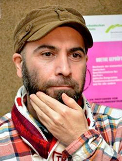

МЕЦЕНАТ
Когда я рассказывал
эту историю
моему другу
Ваграму Мартиросяну,
он внимательно слушал,
но, кажется, не поверил,
что так было
на самом деле.
Ваграм попросил,
чтобы я написал об этом,
и вот выполняю его просьбу.
Но для начала - маленькое отступление. Я часто вижу интересных людей в интересных ситуациях. Даже несколько раз писал о том, что видел, но мне не верят, думают – сочиняю. Но были случаи, когда кое-что, что в принципе не должно было происходить, происходило в присутствии моих друзей, и они, увидев все своими глазами, начинали верить, что я не сочиняю. Однажды мы с друзьями сидим в чайхане, в той, что находится на первом этаже кинотеатра Низами (сейчас там ремонт). В чайхане сидят и цыгане. Маленькие дети, две красивые девушки и один мужчина в возрасте, видимо глава семьи. Вдруг этот мужчина встает, приближается к нашему столу, и, обращаясь ко мне очень культурно, говорит:
- Вы можете купить мне очки в оптике? Минус два.
И потом указывает рукой на оптику, которая стоит напротив. Мы были ошарашены. Сидим, говорим о культуре, о творчестве и представьте, подходит старый цыган и говорит: вы можете мне купить очки в оптике? Во-первых, он обращается на «Вы». Во-вторых, все сидящие за нашим столом моложе меня, но он обращается именно ко мне. Я сказал друзьям: Вот видите, я не сочиняю. Если бы вас здесь не было, и я бы об этом написал, вы бы не поверили, что так было на самом деле.
Я долго думал. Почему все подобные ситуации случаются при мне, почему я улавливаю все абсурдные разговоры в уличном шуме? Ответ нашел в интервью сербского писателя Милорада Павича. В интервью он говорит: ОЧЕВИДЕЦ ТОТ, КТО УМЕЕТ РАССКАЗЫВАТЬ. Другими словами интересные вещи замечает тот человек, который умеет о них рассказывать.
Вернемся к моему меценату. Звонит мне один человек. Говорит по мобильному спокойно, неторопливо. А у нас разговор по мобильнику очень дорого стоит, по сравнению с соседями: Ираном, Россией, Турцией, и даже Арменией и Грузией. Он говорит: Я читаю Ваши статьи уже давно. Я узнаю свои мысли, в том, что Вы пишете. Он хвалит мои статьи, стиль и взгляды. Потом говорит, что хочет встретиться. Обычно я не люблю встречаться с читателями. Тем более с теми, кто спокойно говорит по мобильнику. Есть опыт. Они приходят на встречу, начинают хвалить, и получается, что сделали тебе маленькое одолжение, потому что читали то, что ты написал. Потом начинают показывать, какие они умные, всё знают. Потом начинают говорить, что они тоже могут очень хорошо писать, просто нет охоты. Почти все встречи так заканчиваются. После этих разговоров я устаю. Они отнимают много энергии. И начинается маленькая депрессия. Поэтому я отказался. Но он долго настаивал. Сказал, что уже давно хочет со мной встретиться. В общем, не было варианта – мы назначили встречу на завтра.
Он приехал на большом черном джипе. Вышел из машины, поздоровались. Потом мы сели и поехали. Оказавшись за рулем, он сразу перешел на «ты». Маленький намек на большие обстоятельства. Снова начал хвалить меня. Мои статьи, стиль, взгляды. Вел машину и говорил. Потом он сказал, что наши люди мало читают. А он каждый день покупает газету. Да, бывает, что не согласен с моими взглядами, но как толерантный человек уважает любое мнение. Вдруг он притормозил около ГАИ, которая остановила одну машину. Машина была женская, марку не могу назвать, я в машинах мало разбираюсь. Но знаю, что такие машины водят женщины. И действительно, за рулем была женщина, мы видели ее, когда стояли на светофоре. И вот теперь ее остановила ГАИ. Женщина вышла из машины. Она была в короткой юбке. Хорошо выглядела. Ноги тоже красивые. Совсем не похожа на бизнес-вуман. Другой стиль. Сразу видно, машину купил мужчина. Не сама заработала. Мой читатель остановил свой джип и вышел. Я тоже вышел, было интересно. Женщина кому-то звонила, но видно не могла дозвониться. Тогда мой читатель достал бумажник, положил 100 долларов на капот машины ГАИ и сказал, чтоб ее отпустили. ГАИ отпустила женщину. Мой читатель подошел к ней, они о чем-то поговорили, он взял номер телефона, мы вернулись в машину и продолжили разговор, как ни в чем не бывало.
Приехали в один из ресторанов, сели в кабинет. Там уже был готов стол на двоих. Он заказал горячие блюда и водку. Начали пить. Он снова сказал, что давно меня читает. Давно хотел встретиться. Ему очень интересно сидеть с творческими людьми. Его окружающие - неинтересные люди. Они думают только о машинах и деньгах. Но он другой. Сказал, что наши люди мало читают. Поп-звезды всех достали. Наши телевизионные программы очень примитивные. Надо все шоу-программы закрыть. Наша молодежь испортилась. Наши богатые люди должны помогать творческим людям. Но они тратят деньги только на поп-звезд. Вот так шел разговор. Потом он начал говорить, что он много читал. Всё знает. Когда он был подростком, писал стихи и рассказы. Он может писать, но нет охоты. Поэтому уважает писателей. Понимает их. В общем, я не ошибся. И просто ждал, когда это закончится. Скорее бы. Так подняться и вдруг уйти тоже нелегко. Получается, покушал и всё, пора уходить. Мы выпили одну бутылку. Он хотел заказать еще одну. Я категорически отказался. Тогда по традиции мы начали пить чай. Он продолжал говорить, что богатые люди должны помогать творческим людям. Он на самом деле всё знал. Знал, что другие люди как-то живут, умеют зарабатывать деньги, но творческим людям трудно зарабатывать и жить. Надо признать, что не все это знают. Он говорил, что покупая каждый день газету, выполняет свой гражданский долг. Что наши богатые бизнесмены должны помогать журналистам, поэтам, писателям. Он долго говорил об этом. Я понял, человек готовит меня к ситуации. Тогда у меня вообще не было денег. Я хотел минимум 10 дней пожить загородом и закончить там книгу. В тишине, на свежем воздухе. Я подумал, в самый трудный момент, всегда кто-то находится и помогает. Вот он сам пришел. Несмотря на то, что долго говорит. Несмотря на то, что он может красиво писать, только нет охоты. Что делать, надо терпеть. А он все говорил и говорил. Тогда я нуждался в деньгах и принял бы его материальную помощь. С другой стороны были и сомнения. Все может быть. Кто он? Что хочет? Может быть, все не так просто? Могло возникнуть сто подобных вопросов, но нужда заставила смотреть на всё позитивно. Вот возьму деньги, поеду в деревню, закончу книгу. Я начал в уме рассчитывать, сколько он может дать. У него джип. Если он дал ГАИ сразу сто долларов, значит, мне может дать сразу пятьсот. Он дал ГАИ 100 долларов и выручил женщину, которую в первый раз видел. Он знает, что надо помогать журналистам. Он ругал тех бизнесменов, которые деньги тратят на поп-звезд. Он все знает. Как мы живем, какие у нас проблемы. Тогда получается не 500 долларов, а может быть больше. 700 долларов или 800… … он говорил, а я в уме занимался математикой. Наконец долгий монолог закончился. Он позвал официанта, закрыл счет. И сказал, что периодически помогает многим. Но не перечисляет их имена – настоящий мужчина не должен об этом говорить. Потом он достал бумажник протянул мне сто долларов. Продолжая говорить, чтобы я взял эти деньги и когда у меня будут проблемы, обращался к нему без всяких комплексов. Я не взял. Он сунул деньги прямо в мой карман. Я думал: человек дал деньги ГАИ и выручил женщину, которую видел в первый раз. Она была в короткой юбке. Получается я и она равны, наша цена одна и та же. Мы стоим 100 долларов. По правде говоря, она наверно больше стоит. Он взял номер ее телефона, откуда я знаю, какие у него будут расходы потом? Если бы я не видел, как он выбросил 100 долларов, чтобы ее выручить, я бы принял эти деньги. Но ПОСЛЕ ОСВОБОЖДЕНИЯ ЖЕНЩИНЫ ОТ ГАИ ЗА 100 ДОЛЛАРОВ - никак не мог. Долларов было не больше и не меньше. И этот человек говорил, что наши люди мало читают. Наши бизнесмены тратят деньги на певцов. Он еще лучший среди них. И вот дает сто долларов. Я чувствовал себя оскорбленным. И понял, насколько плохая у нас ситуация. Это - наш меценат. Настоящий меценат. Человек думает, что я должен слушать его три часа и потом взять эти сто долларов и плюс ко всему поблагодарить его. И молиться Аллаху, что не все кончено, пока есть еще такие умные, честные люди. Я вытащил из кармана 100 долларов. Дал обратно. Он не взял. Повторил, что будет периодически помогать мне. Когда будут проблемы, я могу обратиться к нему. Он не брал деньги. Я настаивал, чтоб он взял. Он не брал. Тогда я сунул деньги в его карман. Он вытащил деньги и сунул мне в карман. Я мог бы порвать эти чертовы 100 долларов, но это было бы слишком банально. Только ради того, чтоб избежать банальности, я не порвал деньги. Мы начали бороться как настоящие борцы. Не хватало только рефери, чтобы давать нам очки. Он, наконец, понял, что деньги я не возьму. Я разнервничался, и даже кричал, что в жизни не возьму! Мы вышли из кабинета. Сели в машину. Он выглядел уставшим и опозоренным. Как будто не он меня, а я его опозорил, не взяв 100 долларов. По дороге мы молчали. Когда я выходил, он сказал: Зря ты не взял деньги. Я уважаю творческих людей и многим помогаю. Потом он несколько раз звонил, но я отказался еще раз встретиться. И наверно до сих пор этот человек так и не понял, почему я не взял деньги.
Сеймур Байджан
24-04-10
Но для начала - маленькое отступление. Я часто вижу интересных людей в интересных ситуациях. Даже несколько раз писал о том, что видел, но мне не верят, думают – сочиняю. Но были случаи, когда кое-что, что в принципе не должно было происходить, происходило в присутствии моих друзей, и они, увидев все своими глазами, начинали верить, что я не сочиняю. Однажды мы с друзьями сидим в чайхане, в той, что находится на первом этаже кинотеатра Низами (сейчас там ремонт). В чайхане сидят и цыгане. Маленькие дети, две красивые девушки и один мужчина в возрасте, видимо глава семьи. Вдруг этот мужчина встает, приближается к нашему столу, и, обращаясь ко мне очень культурно, говорит:
- Вы можете купить мне очки в оптике? Минус два.
И потом указывает рукой на оптику, которая стоит напротив. Мы были ошарашены. Сидим, говорим о культуре, о творчестве и представьте, подходит старый цыган и говорит: вы можете мне купить очки в оптике? Во-первых, он обращается на «Вы». Во-вторых, все сидящие за нашим столом моложе меня, но он обращается именно ко мне. Я сказал друзьям: Вот видите, я не сочиняю. Если бы вас здесь не было, и я бы об этом написал, вы бы не поверили, что так было на самом деле.
Я долго думал. Почему все подобные ситуации случаются при мне, почему я улавливаю все абсурдные разговоры в уличном шуме? Ответ нашел в интервью сербского писателя Милорада Павича. В интервью он говорит: ОЧЕВИДЕЦ ТОТ, КТО УМЕЕТ РАССКАЗЫВАТЬ. Другими словами интересные вещи замечает тот человек, который умеет о них рассказывать.
Вернемся к моему меценату. Звонит мне один человек. Говорит по мобильному спокойно, неторопливо. А у нас разговор по мобильнику очень дорого стоит, по сравнению с соседями: Ираном, Россией, Турцией, и даже Арменией и Грузией. Он говорит: Я читаю Ваши статьи уже давно. Я узнаю свои мысли, в том, что Вы пишете. Он хвалит мои статьи, стиль и взгляды. Потом говорит, что хочет встретиться. Обычно я не люблю встречаться с читателями. Тем более с теми, кто спокойно говорит по мобильнику. Есть опыт. Они приходят на встречу, начинают хвалить, и получается, что сделали тебе маленькое одолжение, потому что читали то, что ты написал. Потом начинают показывать, какие они умные, всё знают. Потом начинают говорить, что они тоже могут очень хорошо писать, просто нет охоты. Почти все встречи так заканчиваются. После этих разговоров я устаю. Они отнимают много энергии. И начинается маленькая депрессия. Поэтому я отказался. Но он долго настаивал. Сказал, что уже давно хочет со мной встретиться. В общем, не было варианта – мы назначили встречу на завтра.
Он приехал на большом черном джипе. Вышел из машины, поздоровались. Потом мы сели и поехали. Оказавшись за рулем, он сразу перешел на «ты». Маленький намек на большие обстоятельства. Снова начал хвалить меня. Мои статьи, стиль, взгляды. Вел машину и говорил. Потом он сказал, что наши люди мало читают. А он каждый день покупает газету. Да, бывает, что не согласен с моими взглядами, но как толерантный человек уважает любое мнение. Вдруг он притормозил около ГАИ, которая остановила одну машину. Машина была женская, марку не могу назвать, я в машинах мало разбираюсь. Но знаю, что такие машины водят женщины. И действительно, за рулем была женщина, мы видели ее, когда стояли на светофоре. И вот теперь ее остановила ГАИ. Женщина вышла из машины. Она была в короткой юбке. Хорошо выглядела. Ноги тоже красивые. Совсем не похожа на бизнес-вуман. Другой стиль. Сразу видно, машину купил мужчина. Не сама заработала. Мой читатель остановил свой джип и вышел. Я тоже вышел, было интересно. Женщина кому-то звонила, но видно не могла дозвониться. Тогда мой читатель достал бумажник, положил 100 долларов на капот машины ГАИ и сказал, чтоб ее отпустили. ГАИ отпустила женщину. Мой читатель подошел к ней, они о чем-то поговорили, он взял номер телефона, мы вернулись в машину и продолжили разговор, как ни в чем не бывало.
Приехали в один из ресторанов, сели в кабинет. Там уже был готов стол на двоих. Он заказал горячие блюда и водку. Начали пить. Он снова сказал, что давно меня читает. Давно хотел встретиться. Ему очень интересно сидеть с творческими людьми. Его окружающие - неинтересные люди. Они думают только о машинах и деньгах. Но он другой. Сказал, что наши люди мало читают. Поп-звезды всех достали. Наши телевизионные программы очень примитивные. Надо все шоу-программы закрыть. Наша молодежь испортилась. Наши богатые люди должны помогать творческим людям. Но они тратят деньги только на поп-звезд. Вот так шел разговор. Потом он начал говорить, что он много читал. Всё знает. Когда он был подростком, писал стихи и рассказы. Он может писать, но нет охоты. Поэтому уважает писателей. Понимает их. В общем, я не ошибся. И просто ждал, когда это закончится. Скорее бы. Так подняться и вдруг уйти тоже нелегко. Получается, покушал и всё, пора уходить. Мы выпили одну бутылку. Он хотел заказать еще одну. Я категорически отказался. Тогда по традиции мы начали пить чай. Он продолжал говорить, что богатые люди должны помогать творческим людям. Он на самом деле всё знал. Знал, что другие люди как-то живут, умеют зарабатывать деньги, но творческим людям трудно зарабатывать и жить. Надо признать, что не все это знают. Он говорил, что покупая каждый день газету, выполняет свой гражданский долг. Что наши богатые бизнесмены должны помогать журналистам, поэтам, писателям. Он долго говорил об этом. Я понял, человек готовит меня к ситуации. Тогда у меня вообще не было денег. Я хотел минимум 10 дней пожить загородом и закончить там книгу. В тишине, на свежем воздухе. Я подумал, в самый трудный момент, всегда кто-то находится и помогает. Вот он сам пришел. Несмотря на то, что долго говорит. Несмотря на то, что он может красиво писать, только нет охоты. Что делать, надо терпеть. А он все говорил и говорил. Тогда я нуждался в деньгах и принял бы его материальную помощь. С другой стороны были и сомнения. Все может быть. Кто он? Что хочет? Может быть, все не так просто? Могло возникнуть сто подобных вопросов, но нужда заставила смотреть на всё позитивно. Вот возьму деньги, поеду в деревню, закончу книгу. Я начал в уме рассчитывать, сколько он может дать. У него джип. Если он дал ГАИ сразу сто долларов, значит, мне может дать сразу пятьсот. Он дал ГАИ 100 долларов и выручил женщину, которую в первый раз видел. Он знает, что надо помогать журналистам. Он ругал тех бизнесменов, которые деньги тратят на поп-звезд. Он все знает. Как мы живем, какие у нас проблемы. Тогда получается не 500 долларов, а может быть больше. 700 долларов или 800… … он говорил, а я в уме занимался математикой. Наконец долгий монолог закончился. Он позвал официанта, закрыл счет. И сказал, что периодически помогает многим. Но не перечисляет их имена – настоящий мужчина не должен об этом говорить. Потом он достал бумажник протянул мне сто долларов. Продолжая говорить, чтобы я взял эти деньги и когда у меня будут проблемы, обращался к нему без всяких комплексов. Я не взял. Он сунул деньги прямо в мой карман. Я думал: человек дал деньги ГАИ и выручил женщину, которую видел в первый раз. Она была в короткой юбке. Получается я и она равны, наша цена одна и та же. Мы стоим 100 долларов. По правде говоря, она наверно больше стоит. Он взял номер ее телефона, откуда я знаю, какие у него будут расходы потом? Если бы я не видел, как он выбросил 100 долларов, чтобы ее выручить, я бы принял эти деньги. Но ПОСЛЕ ОСВОБОЖДЕНИЯ ЖЕНЩИНЫ ОТ ГАИ ЗА 100 ДОЛЛАРОВ - никак не мог. Долларов было не больше и не меньше. И этот человек говорил, что наши люди мало читают. Наши бизнесмены тратят деньги на певцов. Он еще лучший среди них. И вот дает сто долларов. Я чувствовал себя оскорбленным. И понял, насколько плохая у нас ситуация. Это - наш меценат. Настоящий меценат. Человек думает, что я должен слушать его три часа и потом взять эти сто долларов и плюс ко всему поблагодарить его. И молиться Аллаху, что не все кончено, пока есть еще такие умные, честные люди. Я вытащил из кармана 100 долларов. Дал обратно. Он не взял. Повторил, что будет периодически помогать мне. Когда будут проблемы, я могу обратиться к нему. Он не брал деньги. Я настаивал, чтоб он взял. Он не брал. Тогда я сунул деньги в его карман. Он вытащил деньги и сунул мне в карман. Я мог бы порвать эти чертовы 100 долларов, но это было бы слишком банально. Только ради того, чтоб избежать банальности, я не порвал деньги. Мы начали бороться как настоящие борцы. Не хватало только рефери, чтобы давать нам очки. Он, наконец, понял, что деньги я не возьму. Я разнервничался, и даже кричал, что в жизни не возьму! Мы вышли из кабинета. Сели в машину. Он выглядел уставшим и опозоренным. Как будто не он меня, а я его опозорил, не взяв 100 долларов. По дороге мы молчали. Когда я выходил, он сказал: Зря ты не взял деньги. Я уважаю творческих людей и многим помогаю. Потом он несколько раз звонил, но я отказался еще раз встретиться. И наверно до сих пор этот человек так и не понял, почему я не взял деньги.
Сеймур Байджан
24-04-10